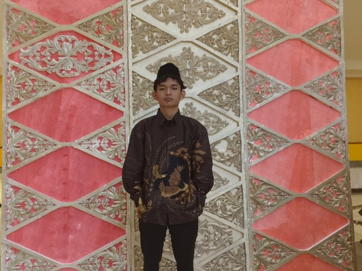

Mahasiswa Universitas Budi Luhur|Fakultas Teknologi Informasi|Prodi Sistem Informasi
About Me

Saya seorang mahasiswa baru di Universitas Budi Luhur yang berminat tinggi pada dunia desain & pengembangan web. Saya senang mencari hal-hal baru dalam teknologi, serta bersemangat untuk terus belajar. ilmu yg saya dapatkan akan saya kembangkan agar dapat berkembang di kemudian hari.
Pendidikan
Prodi : Sistem Informasi
Universitas Budi Luhur
100%
Semangat Belajar
Education Timeline
SMP
Pondok Pesantren Al-Gontory
Santri / Pelajar
Menjalani masa pendidikan menengah pertama sambil aktif mengikuti kegiatan muhadharah serta belajar bahasa Arab dan Inggris.
2024 - 2026
SMA Hang Tuah 1
Alumni / Lulusan SMA
Menyelesaikan masa studi sekolah menengah atas sebelum melanjutkan ke jenjang perguruan tinggi.
2026 - Present
S1 - Sistem Informasi
Universitas Budi Luhur
Memulai perjalanan kuliah sebagai mahasiswa baru, aktif mendalami dasar-dasar teknologi dan pemrograman.
My Portfolio
Portfolio Project
Website Portofolio Pribadi
Eksplorasi awal pembuatan website profil menggunakan HTML, CSS, dan Tailwind CSS untuk pengenalan web development.
Tugas Pemrograman
Latihan Layout Dasar
Latihan menyusun struktur halaman web sederhana menggunakan tag HTML dasar dan styling CSS.
Dasar Pemrograman Web
Mata Kuliah Semester 1 (HTML & CSS)
Sedang Dipelajari
Algoritma & Logika Pemrograman
Pengenalan Python & Struktur Dasar
Semester 1
Course Materials
Rangkuman Materi 1 & 2 - Tren Teknologi Informasi
Modul 1 - Introducing Today's Technologies
Literasi Digital: Pemahaman mendasar tentang cara kerja komputer, perangkat seluler, web, dan teknologi terkait.
Pemrosesan Data: Komputer memproses data mentah menjadi informasi yang bermakna melalui tahapan input, proses, output, dan penyimpanan (storage).
Internet dan Web: Internet merupakan jaringan komputer global, sedangkan web adalah sekumpulan halaman elektronik yang diakses menggunakan browser.
Risiko & Isu Teknologi: Mencakup ancaman keamanan seperti virus/malware, pentingnya menjaga privasi, kesehatan pengguna, serta kepedulian terhadap lingkungan (green computing).
Modul 2 - Connecting and Communicating Online
Sejarah Singkat: Internet berawal dari ARPANET (1969) yang dibuat untuk berbagi informasi antar ilmuwan dan dirancang agar tetap berfungsi meskipun sebagian jaringan rusak.
Koneksi & Alamat: Koneksi internet dapat menggunakan kabel maupun nirkabel (wireless), di mana alamat IP komputer dipetakan ke dalam bentuk nama domain.
Komponen Web: Terdiri dari web server, browser, homepage, serta berbagai layanan komunikasi online lainnya.
Modul 3 - Computers and Mobile Devices
Membahas jenis-jenis perangkat keras (hardware) seperti komputer personal, laptop, tablet, dan smartphone.
Memahami perbedaan fungsi serta spesifikasi dasar perangkat yang digunakan untuk komputasi sehari-hari.
Modul 4 - Programs and Apps
Mempelajari kategori perangkat lunak (software), yang dibagi menjadi software sistem (sistem operasi) dan aplikasi produktivitas.
Mengetahui pentingnya pengelolaan aplikasi, lisensi, dan pembaruan perangkat lunak secara berkala.
Modul 5 - Digital Safety and Security
Fokus pada pencegahan kejahatan siber (cybercrime), pencurian identitas, dan penggunaan kata sandi yang aman.
Pemanfaatan perangkat keamanan seperti antivirus, firewall, dan enkripsi data untuk perlindungan.
Modul 6 - Inside Computers and Mobile Devices
Mengenal komponen internal perangkat seperti CPU (Central Processing Unit), memori (RAM), dan media penyimpanan (SSD & HDD).
Memahami cara kerja komponen dalam mengeksekusi instruksi program di dalam sistem.
Modul 7 - Storage
Mempelajari berbagai media penyimpanan data, baik penyimpanan internal, eksternal, maupun berbasis cloud storage.
Mengetahui perbandingan kapasitas, kecepatan, dan ketahanan dari berbagai media penyimpanan digital.
Modul 2 - Connecting and Communicating Online
Internet & Sejarah: Kumpulan jaringan global yang bermula dari ARPANET (1969) untuk berbagi data dan menjaga ketahanan komunikasi saat bencana.
Koneksi & World Wide Web: Koneksi terbagi menjadi kabel (wired) dan nirkabel (wireless), di mana web server mengirimkan halaman web ke browser pengguna.
Jenis Website: Terdiri dari search engine, jejaring sosial, situs informasi, e-commerce, media sharing, hingga platform edukasi dan bisnis.
Digital Media & Layanan: Memadukan multimedia (grafik, audio, video, VR) serta layanan seperti email, VoIP, dan FTP.
Netiket (Etika Online): Aturan komunikasi yang menekankan kesopanan, menghindari huruf kapital semua (berteriak), serta menjaga interaksi yang sehat.